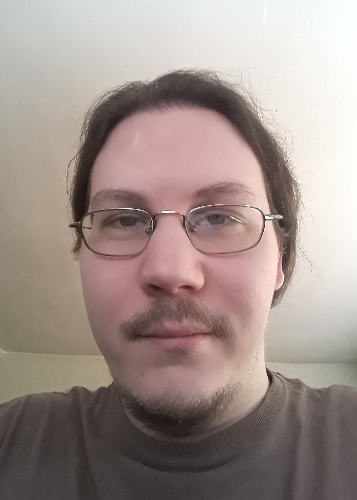

|
 |
Welcome, travelerI'm an artist and web designer living in Kansas City Missouri. If your journey has led you to my door, you must be seeking someone with my particular skill set. Here are some important things about me.
|
My Journey
I graduated from the Kansas City Art Institute with a bachelors degree in Fine Art focused on Illustration. While I enjoyed my time at that school, I quickly found that it wasn't something I was prepared to spend my life doing. Too many artists find commercial work and stop creating material they enjoy. I worked in the Printing industry for a little while following my relocation to Kansas City from Excelsior Springs. I enjoyed that work as well, but in two years I was laid off from two different companies. The first was a company called Henry Wurst, which went bankrupt. The second was a company called Modern Litho, who was forced to lay me off due to the outbreak of Covid-19. The printing industry still hasn't recovered, with many events such as concerts, conventions, and the like being suspended during the crisis.
With Printing going under as a result of the virus, I decided to take matters into my own hands and start a new career that hopefully would provide me more sustainability. This led me to discover Thinkful. I saw an add on facebook of all places, and after doing a month or so of research and talking to people, I finally decided to take the plunge on this journey.
So now, here I am. Excersizing creative muscles I've always had in interesting new ways. I'm excited to see where the next stage of my journey takes me.
Contact Me
You can reach me at any of the above locations, or email me directly at: vacantorange@gmail.com